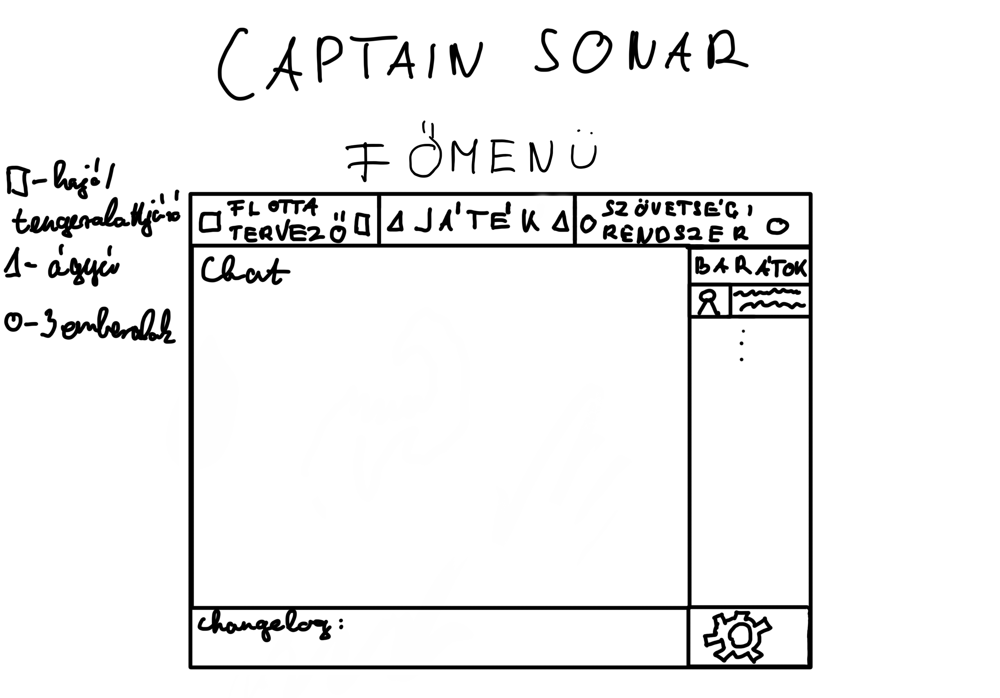
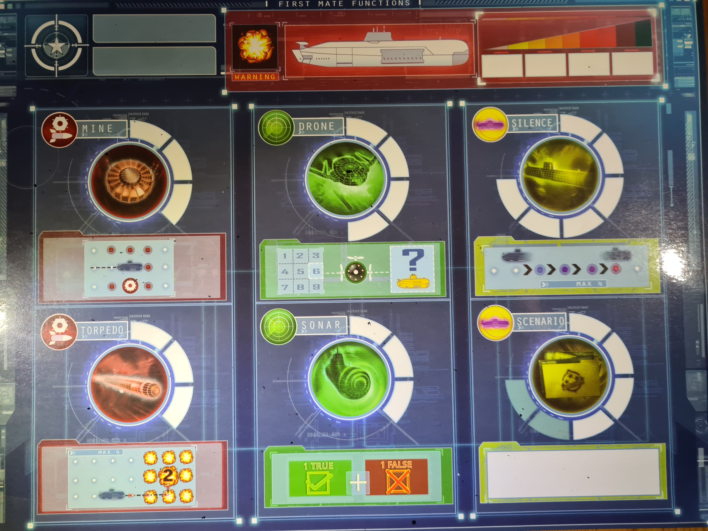
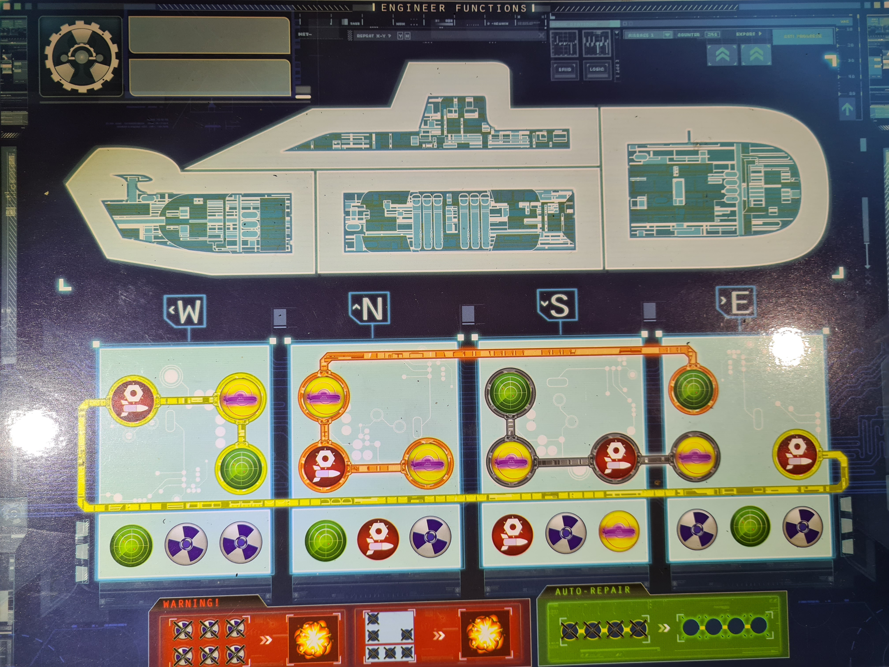

A szoftver amelyet elkészítünk egy Captain Sonar nevű társasjátékon alapul. Elsőre ez a program is csak egy játéknak tűnhet a sok közül, viszont a mi álltalunk megvalósított játék hidat szeretne képezni a társasjátékok és videójátékok között. A Captain Sonar egy megfelelő alapot nyújt egy számítógépes verziónak a körökre osztott/valós idejű játékmenetnek köszönhetően, nem beszélve a társasjátékban is intuitív „kezelőfelületről”.
Egy ilyen stratégiai játék rendkívül kiélezett összecsapásokhoz vezethet, amely során fontos hogy higgadtak maradjunk és megfelelően kommunikáljunk a csapattársainkkal.
A játékunkhoz szükség lesz internetkapcsolatra, ha online, más emberekkel szeretne együtt játszani, ha lokálisan akar valaki játszani, akkor nem szükséges az internet kapcsolat, valamint a játék futtatásához JVM-re is szükség van.
A játékunknak nem lesz annyira nagy gépigénye, mint a mai AAA játékoknak szóval szinte minden gépen el kellene futni, ami tud Java-t futtatni.
A játék használatához szükséges egy fiók létrehozása, amelyhez nem kellm ást tenni, mint az alklmazás elindítása után, amikor megjelennik a bejelenkezés ablka, rányomni a "Még nincs fiókom" gombra. Ezt követően egy e-mail cím,felhasználónév és jelszó megadaását követően már regisztrált is a felhasználó.
Amennyiben már van fiókja a felahsználónak, csak bejelentkezik és már kezdhet is játszani.
A kijelentkezéshez pedig csak rá kell nyomni a "Kijelentkezés gombra"
A programot miután bejelentkeztünk, az adott platform (Steam, EpicGames, stb...) könyvtárából indíthatjuk el.
Ha telepítéskor jóvahagytuk, akkor a startmenüből is indítható.
Asztali parancsikon segítségével dupla kattintás vagy jobb klikk futtatásal is megoldható.
Parancssor segítségével is elindíthatjuk, ha minden kötél szakad.
Ha a fent felsorolt módok közül egyik se válik be, akkor lehet kalóz vagy és meg is érdemled. Ellenkező esetben vedd fel velünk a kapcsolatot.
Fontos megemlíteni, hogy helyezzük áram alá a számítógépet és a monitort is kapcsoljuk be.
A három legfontosabb programrészről készült elrendezési és
látványtervek vagy az eredeti játékról készült kép:
Főmenü
Flotta tervező

Rendszerek feltöltése(Eredeti játék)
Karbantartó rendszer(Eredeti játék)
Térkép (Eredeti játék)

kilépés: A program leáll, visszatér a képernyő az operációs rendszerre
beállítások: Itt érhetőek el a program beállításai, mint
a képernyő felbontása: Az adott képernyőhöz lehet igazítani, hogy milyen felbontással jelenjen meg a program (1024 x 768 és 1920 x 1080 közötti szabványos felbontások közül)
hangerő: A játék hangereit kategória szerint lehet állítani (minden hang; hangeffektek; háttérzene)
saját profil: A bejelentkezésre, valamint
regisztrációra ad lehetőséget. A bejelentkezésre kattintva
e-mail cím/felhasználónév és jelszó kombinációval lehet
továbblépni, esetlegesen elfelejtett jelszó esetén e-mail
címre küldött kód segítségével helyreállítani a fiókot, ahol
egy új jelszót tud beállítani a felhasználó. Regisztráció
hasonló módon működik, egy e-mail címet megadva egy megerősítő
kód segítségével tudunk megadni felhasználónevet és jelszót,
helytelen/már foglalt felhasználónév esetén a program jelez.
Ha a felhasználó már bejelentkezett, a saját profilra
kattintva érhetőek el a profil adatai, mint például az,
elmentett játékállásai, elmentett játékstatisztikái, jelszó
átállítási lehetőség.
flottatervező: A játék során megszerzett alkatrészeket itt lehet a saját hajókra "rászerelni", így képességekkel, specialitásokkal és felszerelésekkel rendelkeznek, amelyek befolyásolják a játékmenetet. Ezek egyaránt jelentenek előnyt vagy hátrányt is a játékban, hogy senki ne szerezhessen túl nagy fölényt.
Flottatervezőben, amely a saját kikötőnk, három járműtípus elérhető, valamint az egyes járművekből három-három egyéni tervezésű lehet a birtokunkban. Minden jármű egyedi alkatrészeket igényel, amelyek nem mindegyike használható fel más típusú járművekben.
Az egyes járművek hat darab egységből épülnek össze: váz, páncél, propeller, motor, felderítőrendszer, valamint a tüzérségi rendszer.
A váz azt befolyásolja hogy nem telitalálat esetén mennyi sebzést szenved a jármű, a páncél a telitalálat esetén határozza meg hogy mennyisebzést kap a jármű. A közepes szinten 1-el csökkenti a rá vonatkozó sebzést, az acélos szinten pedig 2-vel csökkenti.
A motor lehet benzin, dízel, vagy nukleáris. A benzin egészen gyors viszont zajos így könnyedén felfedezhető. A dízel a gyorsabb és viszonylag nehezen felfedezhető. A nukleáris meghajtás pedig a leggyorsabb.
A propeller lehet "el turbo" ,átlagos vagy lassú. Alapból minden járművön lassú propeller található, az átlagos egyel növeli a sebességet , az "el turbo" pedig kettővel.
A felderítőrendszerben mindenki rendelkezik egy sonarral és egy drónnal. A drón segítségével megnézhetjük, hogy egy adott szektorban jelen van-e az ellenség. A sonar segítségével pedig kikényszeríthetünk egy igaz és egy hamis állítást az ellenség pozíciójáról.
A fegyverzet minden járműnek egyedi, bár vannak átfedések az egyes járművek között. A torpedó alapvetően egyet sebez ha szomszédos és kettőt ha teli találat. A kettes szintű torpedó pedig már 5 egységnyi távolságot képes megtenni és telitalálat esetén képes 3-at sebezni. A 3. szintű torpedó pedig 6 egységnyi távolságra lőhető és 2-őt sebez a szomszédos mezőn, valamint hármat telitalálat esetén.
Felszerelések rendszere, kombinálásuk:
Az egyes egységekből, ha mindegyikből lehetne használni a legfejlettebb rendszert, az rendkívül erőssé tenné az adott járművet. Éppen ezért a jármű összeállítása során maximum 2 darab hármas szintű, valamint maximum 3 darab 2-es szintű egységet lehet felhasználni. Abban az esetben ha egy járműre felszerelünk egy különleges fegyverzetet, csak 1 darab hármas szintű egységet használhatunk fel.
Ezekhez az alkatrészekhez megnyert csatákon keresztül lehet hozzájutni. A megsemmisült ellenséges járművekből véletlenszerűen ki lehet menteni egy alkatrész a győztes csapatnak. Amennyiben több jármű csatázott, akkor minden megsemmisített jármű után 50% annak az esélye, hogy valamelyik alkatrészt megkapja az adott járművet megsemmisítő jármű. Továbbá minden, zsinórban 3 csatát megnyert játékos kap egy alkatrészt véletlenszerűen. Az egyes alkatrészek növelhetik a jármű gyorsaságát, mozgási képességeit, tüzérségi erejét és/vagy hatótávját, felderítő képességeit és páncélját.
Különféle járművek és funkcióik:
- Romboló:
A romboló feladata, hogy felderített tengeralattjárókra mérjen csapást, valamint szigeteket foglaljon, és légvédelmet biztosítson. A romboló 3 egységet tud mozogni. Alapvetően 2 "élettel" rendelkezik. Mivel könnyű elpusztítani, ezért fontos kihasználnia azt az előnyét hogy gyors.
Két fegyverzettel rendelkezik alapból, amely a légvédelmi ágyú és az akna. A légvédelmi ágyúval le lehet lőni egy az azonos szektorban lévő légi járművet, továbbá a szintén azonos szektorban lévő felszínen lévő járművekbe tud egyet sebezni teli találat esetén. Az akna bármelyik szomszédos mezőre elhelyezhető (átlósan szomszédos mező esetén is) és bármikor detonáltatható. Teli találat esetén egyet sebez, szomszédos mező esetén pedig felfedi hogy az ellenség benne volt egy szomszédos mezőjében. A romboló különleges fegyverzete a robbanó hordók. Ezeket úgy tudja kijátszani, hogy egy körben 4 azonos irányú lépést tesz, és minden egyes lépésnél kiválasztható, hogy milyen mélységbe merüljön a hordó. Amennyiben eltalálja a tengeralattjárót, 2 sebzést okoz, amennyiben szomszédos mezőben van, 1 sebzést okoz.
A romboló élete adott, viszont páncélzattal és vázzal lehet csökkenteni a kapott sebzés mértékét. Páncélból és vázból 3 szint van. Az "alap", az "kemény" és az "acélos" amely a legerősebb. Minden egyes szint 1-el csökkenti a kapott sebzést a rá vonatkozó esetben.
A sonar és a drón a felderítésben segítenek. A sonar segítségével le ellenőrizhetjük hogy egy szektorban tartózkodik-e az ellenfél, a drónnal pedig egy igaz és egy hamis állítást kell adnia az ellenfélnek a pozíciójáról.
Az "előretörés" képesség során valamilyen irányban 6 egységet tud mozogni, minden lépés azonos irányban történik. Ezt a képességet a propeller befolyásolja, amely a 2. szinten eggyel növeli a hatótávot, míg a harmadik szinten engedélyez egy irányváltoztatást az utolsó lépés során.
- Repülőgéphordozó-anyahajó:
A repülőgéphordozó-anyahajó feladata, hogy távolról felderítse az ellenséget és csapást mérjen rájuk. Az anyahajó a játékban mondhatni "support" szerepet tölt be, ahol felderít és sebzi távolról az ellenfeleket, viszont a szemtől szembeni csatát kerüli. A négy égtáj irányában tud mozogni 1 egységet. Alapvetően 7 "élettel" rendelkezik.
A repülőgéphordozó-anyahajó repülőgéppel és rövid hatótávú torpedóval rendelkezik, különleges fegyvere a helikopter. A repülőgép segítségével minden felszínen lévő hajó pozícióját meg tudja állapítani, valamint 3 szektort tud ellenőrizni tengeralattjárók után. Továbbá a repülők képesek támadást végezni a felszínen lévő járművekkel szemben, amely repülőt, ha nem lőnek le 2 sebzést okoz. A rövid ható távú torpedóit 2 távolságra tudja kilőni. Teli találat esetén 1-et sebez, célja inkább védelmi jellegű. Különleges fegyvere a helikopter, amely használható egy szektor ellenőrzésére, valamint bárhova elszállíthat egy bombát és ledobhatja egy megválasztott mélységbe, amely telitalálat estén azonnal megsemmisíti a tengeralattjárót, ellenkező esetben nem sebez egyáltalán. Továbbá a helikopterrel elfoglalható egy sziget abban az esetben, ha nem lövik le. A repülőkből 5 darab, a helikopterből pedig 2 darab elérhető egy csata során, amelyekből egyszerre csak egy használható.
A repülőgéphordozó-anyahajó élete adott, viszont páncélzattal és vázzal lehet csökkenteni a kapott sebzés mértékét. Páncélból és vázból 3 szint van. Az "alap", az "kemény" és az "acélos" amely a legerősebb. Minden egyes szint 1-el csökkenti a kapott sebzést a rá vonatkozó esetben.
A sonar, és a drón a felderítésben segítenek. A sonar segítségével leellenőrizhetjük hogy egy szektorban tartózkodik-e az ellenfél, a drónnal pedig egy igaz és egy hamis állítást kell adnia az ellenfélnek a pozíciójáról. Itt is kettővel fejlettebb rendszerek találhatóak, melyek 1-el csökkentik a felkészültségek számát használat előtt. Különleges képessége, amivel felszerelhető, az egy olyan repülőgép, amelyet egy szektorba kiküldve jelzi, hogyha oda belép egy ellenséges jármű.
Amennyiben semelyik repülője nincs használatban az "au revoir" képességével 1 irányba tud hármat lépni és a kezdeti pozíciójához képest a másik három irányba lő kis hatótávolságú torpedót. A képesség használatához szükséges a rövid ható távú torpedó készléte is.
- Tengeralattjáró
A tengeralattjáró feladata, hogy felderítetlenül mozogjon, és a mélyből mérjen csapást az ellenségre akkor, amikor a legjobban fáj nekik. A mélybe merülés opciónak köszönhetően, amelyel 3000m mélyre tud elmerülni (3x1000), rendkívűl nehéz megállapítani a pozícióját. Viszont ha nem manőverezik megfelelően, az ellenséges csapat könnyedén lokalizálni tudja. A tengeralattjáró a négy égtáj irányában tud mozogni 2 egységet, valamint a mélységét változtatni. A mélység megváltoztatása szintén publikus információ, az viszont, hogy merült vagy feljött már nem. Alapvetően 4 "élettel" rendelkezik.
Két fegyverzettel rendelkezik alapból, amely a torpedó és az akna. A torpedó tellitalálat esetén kettőt, szomszédos mező estén pedig egyet sebez, valamint 4 egységet mozoghat a torpedó bármilyen irányba minden egyes egység esetén (a saját útvonalát nem érintheti), valamint egyet változtathat a mélységén. Az akna bármelyik szomszédos mezőre elhelyezhető (átlósan szomszédos mező esetén is) és bármikor detonáltatható, teli találat esetén egyet sebez, szomszédos mező esetén pedig felfedi, hogy az ellenség benne volt-e szomszédos mezőjében. A tengeralt járó esetén különleges fegyverzet a rakéta, amelyel szigetek bázisait tudja megsemmisíteni, vagy a felszínen lévő járművekbe 3 sebzést okozni teli találat esetén, ellenkező esetben 0 a sebzése.
A tengeraltjáró élete adott, viszont páncélzattal és vázzal lehet csökkenteni a kapott sebzés mértékét. Páncélból és vázból 3 szint van. Az "alap", az "kemény" és az "acélos" amely a legerősebb. Minden egyes szint 1-el csökkenti a kapott sebzést a rá vonatkozó esetben.
A sonar, és a drón a felderítésben segítenek. A sonar segítségével leellenőrizhetjük hogy egy szektorban tartózkodik-e az ellenfél, a drónnal pedig egy igaz és egy hamis állítást kell adnia az ellenfélnek a pozíciójáról. Itt is kettővel fejletteb rendszerek taálhetóak melyek 1-el csökkentik a felkészültségek számát használat előtt.
"Chemin de la souris" azaz "egérút" során a tengeralattjáró úgy tud négyet mozogni egy irányba hogy nem publikus ilyenkor az irány amelybe elment. Ezt a képességet a propeller befolyásolja amely a 2. szinten egyel növeli a ható távot még a harmadik szinten engedélyez egy irányváltoztatást az utolsó lépés során.
szövetségi rendszer: erre a menüpontra kattintva van
lehetőség csatlakozni szövetségekhez, létrehozni szövetséget,
vagy különböző diplomácia kapcsolatokat ápolni más szövetségi
rendszerekkel.
Ez segíti a közösségépítést. Amennyiben része leszünk egy
szövetségi rendszernek, ez látható lesz a profilunkon, továbbá
láthatjuk a többi játékos harcainak teljes folyamát (nem csak
az eredményeit), így olyan élményt nyújt, mintha egy
szövetségi rendszeren belül hozzáférnénk a hadi titkokhoz.
Lehetőség van a kereskedésre (cserekereskedelem), amellyel
egymást kisegítve lehet továbbfejleszteni a járműveket vagy
akár bővíteni a flottákat.
A szövetségeken belül létre lehet hozni "osztagokat", amelynek
célja hogy a közeli barátokkal szorosabb szövetségbe tudjunk
kerülni. Egy osztag maximális létszáma 10 fő.
Egy játékos csak akkor kereskedhet osztagon kívül, ha azon
belül senki nem tart igény az adott alkatrészre, vagy nem
tudnak megfelelő ajánlatot tenni. Hogy ne lehessen ezzel
visszaélni, ha 24 órán belül nem sikerült megegyezni senkivel
,akkor feloldódik a korlátozás. Az osztag tagjai le is
mondhatnak erről a jogukról.
Mind a szövetségi rendszerek esetében mind az osztagok
esetében van lehetőség történet írásra. Ezzel lényegében
történelme lehet az egyes osztagoknak és szövetségi
rendszereknek, legendákat alkothatnak.
chat: A chatrendszer már a lobby-ban létrejön egy külön ablakban, ott lehet kommunikálni. Két mód van, alapesetben mindenki látja amit a chatbe írunk, a másik esetben pedig csak a csapattársak látják. Amennyiben a chatbe az üzenet elé beírjuk, hogy "/all", akkor az az üzenet mindenki számára látható lesz, aki részt vesz a csatában.
játék: Ezt a menüpontot választva a program két lehetőséget kínál fel: az online és az offline játékmódot
online: Lehetőséget ad a játékosoknak, hogy online
csatlakozzanak és valós időben mérkőzzenek meg egymással.
Különböző játékterek és szobák elérhetők, ahol a játékosok
különböző szabályok és nehézségi szintek szerint
játszhatnak. A lobby-n keresztül csatlakozhatnak készülő
csatákba és előre egyeztethetnek taktikát a játékosok. A
játék kezdete előtt minden csapatnak ki kell választani hogy
milyen járművet szeretnének használni. Bármelyik játékos
hozhat létre lobby-t, amelyet korlátozhat meghívásosra, így
biztosítva azt, hogy a barátaival tudjon játszani.
offline: Ebben a játékmódban különféle nehézségi szintű mesterséges intelligenciával rendelkező ellenfelek elérhetők. A mesterséges intelligencia adaptív, képes alkalmazkodni a játékosok készségszintjéhez, így például egy versenyre való felkészüléskor egy csapat képes edzeni, összeszokni, stratégiákat kitalálni.
Mivel a játékunk egy taktikai csapatjáték, ezért amellett, hogy ha unatokozunk és nem tudunk mit csinálni, akkor unatkozás helyett akár játszhatunk is, hanem mivel csapatjáték, ezért ha nincsenek barátaink vagy csak nem érnek épp rá akkor alkamunk van az interneten keresztül megismerni embereket is, valamint a mivel taktikai játék, ezért a taktikus gondolkodást is elősegíti. Valamint azoknak is nagyon jó játék, akik játszottak már a Captain Sonar nevű társasjátékkal, hiszen ez az alapja a játékunknak, viszont pár újdonsággal kibővítve, ezért akik játszottak is az eredeti társasjátékkal tudnak új és akár izgalmas dolgokat megtapasztalni.
A termékünk alapötlete, hogy egy társasjátékot implementáljunk gépes környezetbe, valamint, hogy új dolgokkal bővítsük ki azt. A játékunkat alapvetően Java nyelven fogjuk megcsinálni, ezért minden olyan platfomot megcélzunk ami képes JVM futtatására, azonban egyenlőre a játékunk inkább számítógépes környezetre lesz lefejlesztve, de ha a későbbiekben lesz igény rá, akkor androidos eszközökre is meg tudjuk majd oldani.
A társasjáték alapötlete, hogy van két csapat, akik egy-egy tengeralattjárót irányítanak és megpróbálják a másik csapat tengeralattjáróját kilőni, viszont a helyzete nem ismert, csak az, hogy merre mozog és ez alapján kell kitalálni, hogy merre lehet és kilőni. Mi viszont adunk bele pár újdonságot, hogy mindenkinek izgalmas játékélményt biztosítsunk ilyen pl.: a tengeralattjáró nem csak a víz felett és víz alatt lehet, hanem a víz alatt mélyebbre is lemehet.
Az általunk fejlesztett Captain Sonar szoftver nem csupán egy játékplatform, hanem egy közösség is, ahol a játékosok szoros kapcsolatokat építhetnek. A versenyek és ranglisták lehetőséget adnak a játékosoknak arra, hogy megmérkőzzenek a világ különböző pontjairól érkező játékosokkal, és bizonyítsák tehetségüket a tengeri csatákban. A folyamatos játékfejlesztések és a közösség véleménye alapján történő frissítések garantálják, hogy mindig a játékosok igényeihez igazodjon a Captain Sonar élmény.
Zárszó
A Captain Sonar szoftver lehetővé teszi, hogy az izgalmas társasjáték élményét online is átélhesd. Csatlakozz a közösséghez, fejleszd a stratégiádat és szerezz új barátokat ebben az izgalmas tengeri csatában! Ne habozz, próbáld ki most, és merülj el a Captain Sonar világában!
Jó játékot és sikeres küldetéseket kívánunk a Captain Sonar szoftver világában!